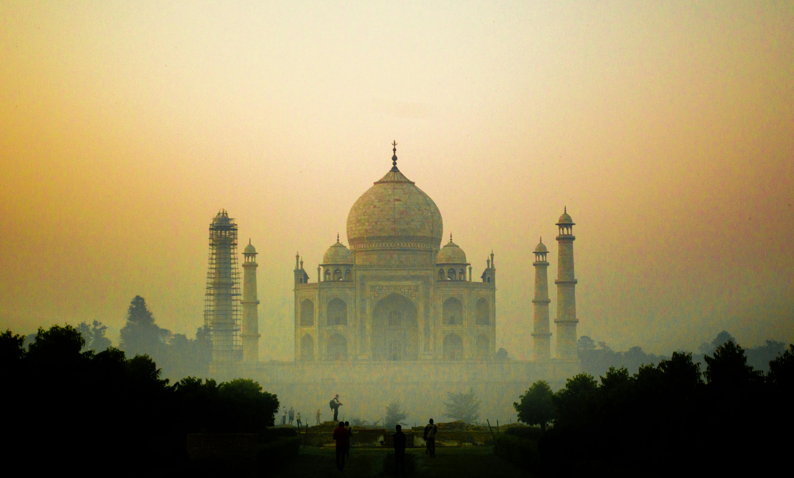
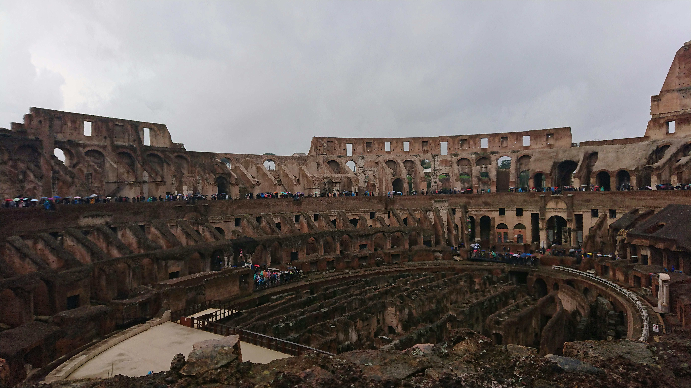
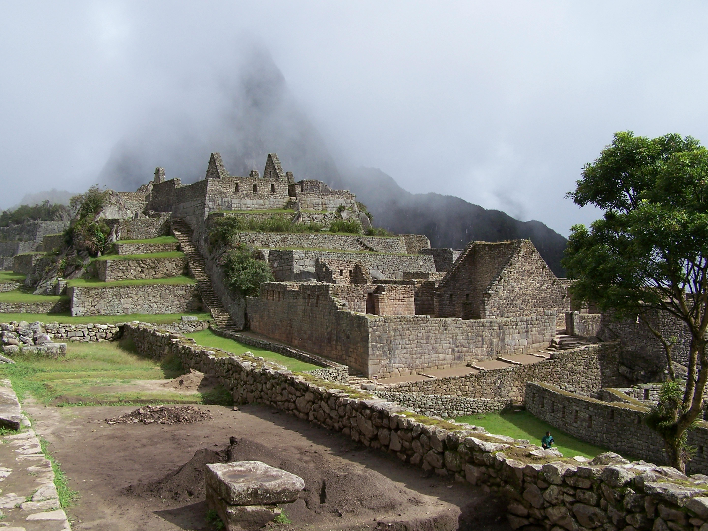
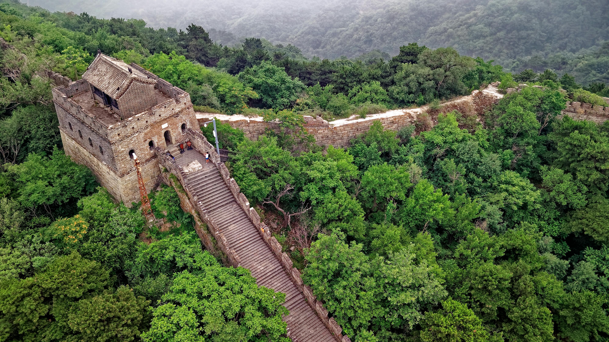
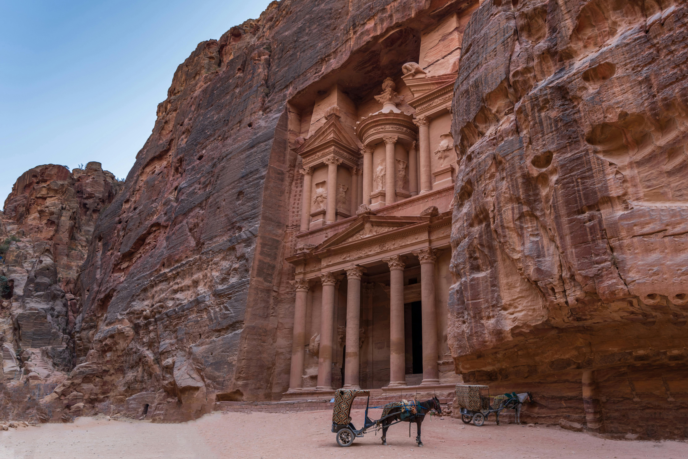
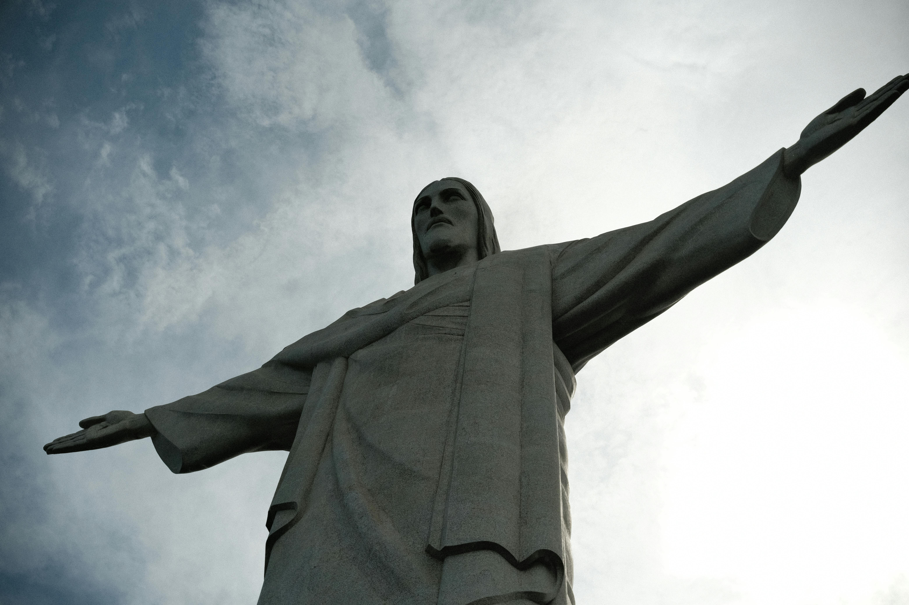
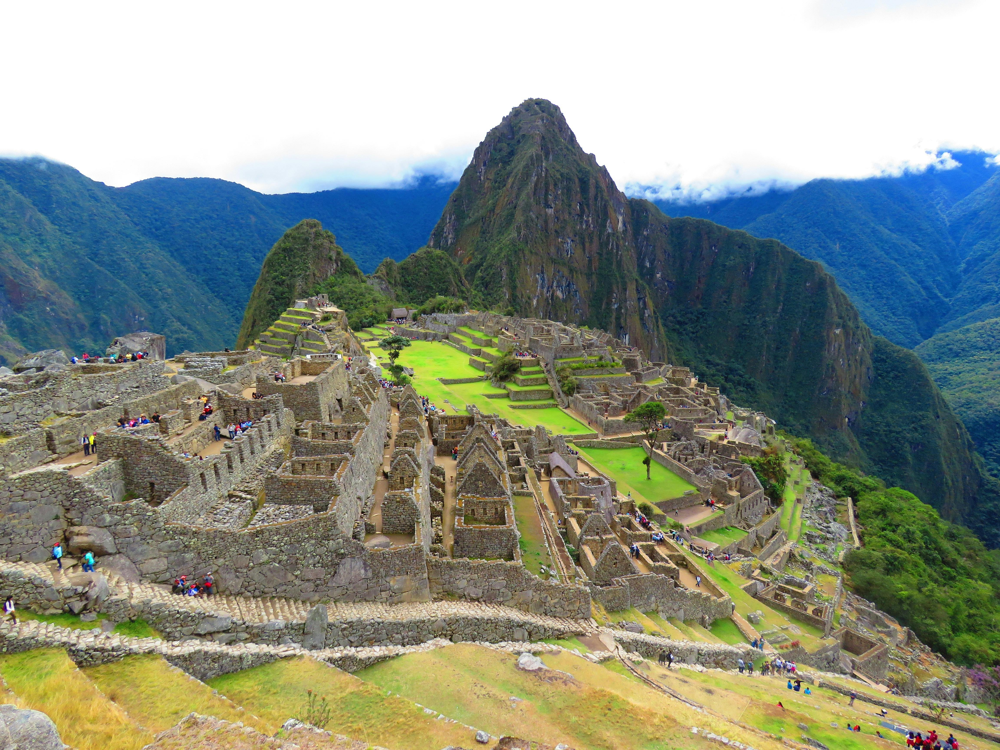
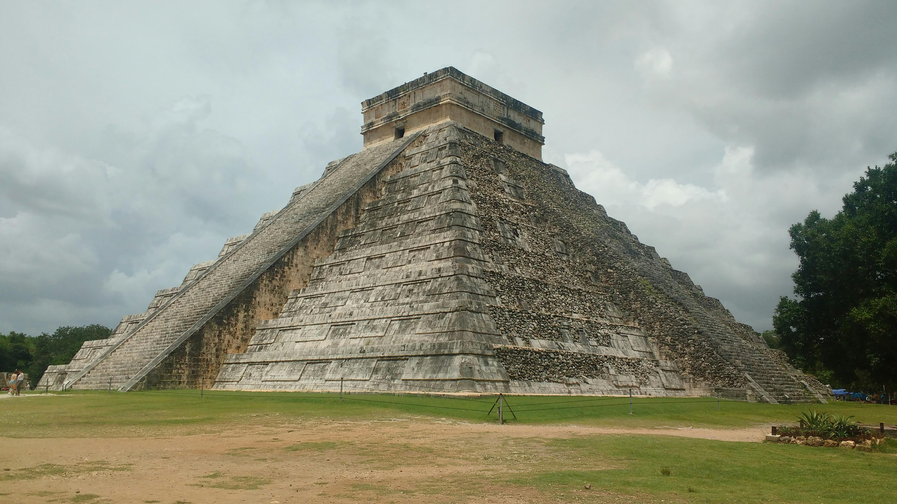
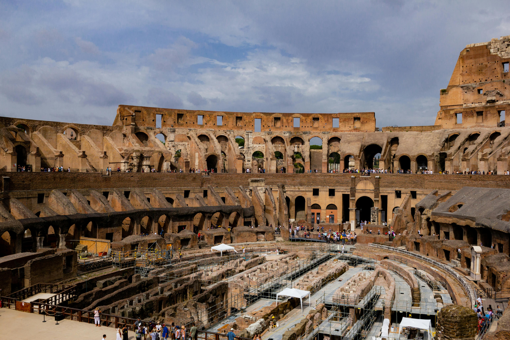
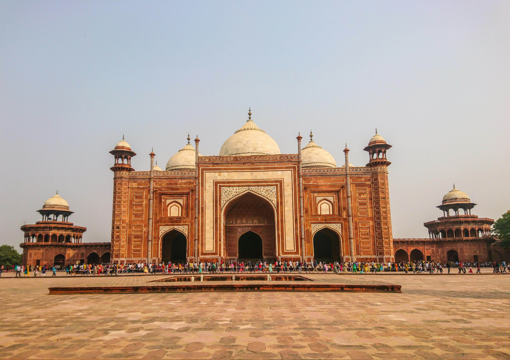

Unveiling the World’s Greatest Marvels


🏯 The Great Wall of China: The Dragon That Guards a Civilization

Stretching across mountains, deserts, and vast grasslands, the Great Wall of China is not just a structure
it is a symbol of endurance, ambition, and human determination. Often called the “longest man-made structure
in the world,” the Wall winds over 21,000 kilometers across northern China, standing as a silent guardian of
history.
Contrary to popular belief, the Great Wall was not built in a single era. Its construction began as early as the 7th century BCE,
with different states building defensive walls. Later, during the Qin Dynasty (221–206 BCE), Emperor Qin Shi Huang ordered the connection
and expansion of these walls to protect against northern invasions. Centuries later, the Ming Dynasty (1368–1644) rebuilt and strengthened
the Wall using bricks and stone, creating the impressive structure we see today.
While its primary purpose was military defense against nomadic tribes, the Wall also served as:
- A border control system
- A trade regulation checkpoint along the Silk Road
- A communication network using smoke signals and beacon fires
- It was both a military shield and a symbol of national unity.
One of the most fascinating aspects of the Great Wall is how it adapts to the terrain. It climbs steep mountains, crosses deserts, and follows
natural ridgelines. Builders used locally available materials — tamped earth in deserts, stone in mountains, and bricks in later periods.
Imagine constructing such a massive structure without modern machinery. It remains one of the greatest engineering feats in human history.
It is often said the Wall is visible from space — this is actually a myth without aid.
Millions of workers, including soldiers and laborers, contributed to its construction. Some sections have disappeared due to erosion and human activity.
Today, the Great Wall is a UNESCO World Heritage Site and one of the New Seven Wonders of the World. It attracts millions of visitors annually, offering
breathtaking views and a tangible connection to ancient history. But beyond its bricks and stones, the Wall represents something greater — humanity’s relentless pursuit of protection, power, and permanence.
Petra: The Rose-Red City Carved in Stone – A Timeless Wonder of the World

Hidden among the rugged desert mountains of southern Jordan lies one of the most breathtaking archaeological treasures ever discovered—Petra, often called
“The Rose-Red City.” With its magnificent temples carved directly into towering sandstone cliffs, Petra stands as a powerful reminder of the creativity,
engineering skill, and culture of an ancient civilization that thrived more than 2,000 years ago. Today, it proudly holds its place as one of the New
Seven Wonders of the World, attracting millions of travelers and history lovers from around the globe. 🏜️
Petra was once the flourishing capital of the Nabataean Kingdom, an Arab civilization known for its advanced trade networks and impressive water-management systems.
Located along major trade routes connecting Arabia, Egypt, and the Mediterranean, Petra became a wealthy and vibrant city where merchants traded spices, silk, incense,
and precious goods.
However, after centuries of prosperity, the city gradually declined due to earthquakes, shifting trade routes, and the rise of the Roman Empire. Eventually, Petra was
largely abandoned and faded from world history until it was rediscovered in 1812 by Swiss explorer Johann Ludwig Burckhardt.
One of the most magical experiences in Petra is the approach to the city through the Siq, a narrow, winding canyon nearly 1.2 kilometers long. Towering rock walls rise over 80
meters high, creating a dramatic pathway that builds anticipation with every step.
As visitors walk through this natural corridor, the canyon suddenly opens to reveal Petra’s most iconic monument—the Treasury (Al-Khazneh). The moment its intricate façade appears
between the cliffs is unforgettable, making it one of the most photographed sights in the world. 📸
Petra is far more than just the Treasury. The ancient city is filled with incredible structures carved directly into the sandstone cliffs, including:
> The Monastery (Ad-Deir) – A massive monument even larger than the Treasury.
> The Royal Tombs – Elaborate burial sites built for Nabataean rulers.
> The Roman Theater – A grand amphitheater that could seat thousands of spectators.
> Ancient temples, streets, and markets that reveal the city’s former prosperity.
What makes Petra truly unique is the way its architecture blends natural rock formations with human craftsmanship, creating a city that feels both ancient and timeless.
Beyond its beauty, Petra was also a remarkable engineering achievement. The Nabataeans developed an advanced water collection and storage system, including
channels, dams, and underground cisterns. This allowed the city to survive in the harsh desert climate and support a large population despite limited rainfall.
Their ingenuity turned Petra into a thriving oasis in the middle of the desert.
Today, Petra is one of the most visited destinations in the Middle East and a UNESCO World Heritage Site. Travelers from around the world come to explore
its vast ruins, hike its mountain trails, and witness its magical glow at sunset when the sandstone cliffs turn deep shades of red and gold. 🌄
Visitors can also experience Petra by Night, where hundreds of candles illuminate the path to the Treasury, creating a peaceful and unforgettable atmosphere
beneath the desert stars.
Petra’s beauty lies not only in its grand monuments but also in the story it tells—a story of innovation, trade, culture, and resilience. Carved into the
desert cliffs by a civilization long gone, the city remains one of humanity’s most extraordinary achievements.
From its mysterious past to its stunning architecture, Petra continues to inspire awe and curiosity in everyone who visits. It is more than just a historical site—it is a symbol
of the creativity and ambition that define human civilization.
Christ the Redeemer: The Iconic Guardian of Rio de Janeiro

Standing high above the vibrant city of Rio de Janeiro, Christ the Redeemer is one of the most recognizable monuments in the world. With its arms outstretched over the city,
this magnificent statue symbolizes peace, faith, and welcome. Towering above the landscape, it has become not only a national symbol of Brazil but also one of the New7Wonders
of the World.
The statue stands on the peak of Mount Corcovado, overlooking the stunning coastline and bustling streets of Rio de Janeiro. Completed in 1931, the statue reaches about 30 meters
(98 feet) in height, with an additional pedestal that lifts it even higher above the city. Its massive arms stretch 28 meters wide, creating the impression that it is embracing the
entire city below. 🌎
The idea for Christ the Redeemer was proposed in the early 20th century as a symbol of Christianity and hope for Brazil. Designed by Brazilian engineer Heitor da Silva Costa and
sculpted by French artist Paul Landowski, the statue was built using reinforced concrete and covered with thousands of small soapstone tiles.
The monument quickly became a powerful cultural and religious symbol, representing faith, protection, and unity for the people of Brazil.
Today, Christ the Redeemer is visited by millions of tourists every year who travel up the mountain by train or road to witness the breathtaking panoramic views of Rio. From the top,
visitors can see famous landmarks like Sugarloaf Mountain, the sparkling beaches, and the vast Atlantic Ocean. 🌅
More than just a statue, Christ the Redeemer represents the spirit of welcome and peace. Its striking location, impressive engineering, and deep cultural meaning make it one of the most
admired monuments on Earth. With its arms forever open above Rio, Christ the Redeemer stands as a timeless symbol of faith, hope, and humanity—truly deserving its place among the Seven Wonders of the World. ✨
Machu Picchu: The Lost City of the Incas in the Clouds

Hidden high in the Andes Mountains of Peru lies one of the most mysterious and breathtaking archaeological sites in the world—Machu Picchu. Often called “The Lost City of the Incas,” this ancient mountain city
is a masterpiece of engineering, architecture, and natural beauty. Perched high above the Sacred Valley, Machu Picchu is one of the most famous historical sites on Earth and proudly holds its place among the
New7Wonders of the World. 🌄
Machu Picchu was built in the 15th century during the height of the Inca Empire, most likely under the rule of the Incan emperor Pachacuti. The city served as a royal estate or sacred religious site for the Inca elite.
What makes Machu Picchu remarkable is its location. The city sits nearly 2,430 meters (7,970 feet) above sea level on a mountain ridge, surrounded by steep cliffs and lush green peaks. Its remote location helped keep
it hidden from Spanish conquistadors during their conquest of the Inca Empire.
For centuries, Machu Picchu remained largely unknown to the outside world until it was brought to international attention in 1911 by American explorer Hiram Bingham. Since then, the site has become one of the most
important archaeological discoveries of the modern era.
Today, Machu Picchu is recognized as a UNESCO World Heritage Site and attracts travelers from around the world who come to experience its beauty and mystery.
Despite being built without modern technology, the Incas constructed Machu Picchu with extraordinary precision. The city features hundreds of stone structures, terraces, temples, and pathways carefully designed to
blend with the surrounding mountains.
Massive stone blocks were cut and fitted together so perfectly that no mortar was needed. This technique helped the structures withstand earthquakes, which are common in the region.
The city also includes advanced agricultural terraces and an impressive water management system that provided fresh water through canals and fountains—showing the incredible ingenuity of the Inca civilization.
Today, visitors travel through Peru to reach Machu Picchu, often hiking the famous Inca Trail to experience the dramatic journey to the ancient city.
Surrounded by mist-covered mountains and breathtaking landscapes, Machu Picchu feels almost magical. Its mysterious origins, remarkable construction, and stunning setting make it one of the greatest achievements of ancient civilization.
Chichén Itzá: The Majestic Pyramid City of the Maya

Deep within the jungles of Mexico’s Yucatán Peninsula stands one of the most impressive remnants of the ancient Maya civilization—Chichén Itzá. Known for its towering pyramids, advanced astronomy, and remarkable architectural achievements,
Chichén Itzá was once one of the most powerful cities in the Maya world. Today, it is recognized as one of the New7Wonders of the World, drawing millions of visitors who come to witness its historical and cultural significance. 🌎
Chichén Itzá was established around the 7th century and grew to become one of the largest and most influential cities of the Maya civilization. The city served as a major political, economic, and religious center, connecting trade routes throughout the region.
Its name roughly translates to “At the mouth of the well of the Itza,” referring to the natural underground water sources called cenotes that were essential for survival in the region. These sacred wells played an important role in Maya rituals and ceremonies.
The most famous structure at Chichén Itzá is the magnificent El Castillo, also known as the Temple of Kukulkan. This massive step pyramid rises about 30 meters (98 feet) above the ground and demonstrates the Maya’s deep understanding of
astronomy and mathematics. During the spring and autumn equinoxes, sunlight creates a fascinating illusion on the pyramid’s staircase that resembles a serpent slowly descending the steps—symbolizing the return of the god Kukulkan. This
incredible phenomenon continues to amaze visitors and researchers alike. ☀️
Chichén Itzá is filled with remarkable structures that highlight the intelligence and creativity of the Maya people. These include temples, ceremonial platforms, ball courts, and observatories used to study the stars and planets.
One notable structure is El Caracol, which was likely used by Maya astronomers to track the movements of celestial bodies such as Venus. The city also contains one of the largest ancient ball courts in Mesoamerica, where ritual
games were played as part of religious traditions.
Today, travelers from around the world visit Mexico to explore the incredible ruins of Chichén Itzá and learn about the rich history of the Maya civilization.
Surrounded by tropical forests and ancient legends, the site remains one of the most important archaeological treasures in the Americas. Its remarkable pyramids,
scientific achievements, and cultural legacy make it a true masterpiece of ancient civilization.
The Colosseum: Rome’s Legendary Arena of Gladiators

In the heart of ancient Rome stands one of the most iconic monuments of the Roman world—Colosseum. This massive stone arena, famous for
its gladiator battles and grand spectacles, represents the power, engineering brilliance, and culture of the Roman Empire. Built nearly
two thousand years ago, the Colosseum remains one of the most impressive architectural achievements in history and is proudly recognized
as one of the New 7 Wonders of the World. 🏛️
The Colosseum is best known for hosting dramatic gladiator battles, where trained fighters competed against each other in combat. These
warriors, known as Roman gladiators, fought bravely before cheering crowds in contests that were both dangerous and thrilling.
In addition to gladiator fights, the arena also hosted animal hunts, mock naval battles, and public spectacles designed to entertain
the masses. Beneath the arena floor was a complex underground system called the Hypogeum, where animals, fighters, and stage equipment
were prepared before appearing dramatically in the arena.
The Colosseum was a masterpiece of Roman engineering. Built using stone, concrete, and a system of arches, the structure was designed to support
massive crowds while allowing people to enter and exit quickly through dozens of passageways.
Its advanced design included seating arranged according to social class, shaded areas to protect spectators from the sun, and carefully planned
corridors that controlled the movement of thousands of visitors.
Even after centuries of earthquakes and damage, much of the Colosseum still stands today, proving the durability and brilliance of Roman architecture.
Today, the Colosseum is one of the most visited historical landmarks in Rome and a powerful symbol of the legacy of the Roman Empire.
Millions of travelers visit this legendary arena each year to explore its ruins and imagine the dramatic events that once took place inside its walls.
The Colosseum remains a timeless reminder of the grandeur and engineering genius of ancient Rome, earning its rightful place among the Seven Wonders of the World.
The Taj Mahal: India’s Eternal Monument of Love
.
On the banks of the Yamuna River in northern India stands one of the most beautiful buildings ever created—Taj Mahal. Known for its breathtaking white marble
architecture and perfect symmetry, the Taj Mahal is a masterpiece of art, culture, and devotion. Built as a symbol of eternal love, this magnificent monument
has become one of the most admired landmarks in the world and proudly holds its place among the New7Wonders of the World. 🕌
The Taj Mahal was commissioned in 1632 by the Mughal emperor Shah Jahan in memory of his beloved wife Mumtaz Mahal, who passed away during childbirth. Heartbroken
by her death, Shah Jahan ordered the construction of a grand mausoleum that would honor her memory forever.
It took more than 20 years and thousands of skilled craftsmen, architects, and artists to complete this extraordinary monument, making it one of the greatest
architectural achievements of the Mughal era.
The Taj Mahal is famous for its stunning white marble structure that appears to change color throughout the day—from soft pink at sunrise to bright white in
the afternoon and golden under the moonlight.
The complex includes a magnificent central dome, four elegant minarets, beautiful gardens, reflecting pools, and detailed marble carvings decorated with precious
stones. The design blends Islamic, Persian, and Indian architectural styles, creating a unique masterpiece that is admired across the world.
Every detail of the monument reflects balance and harmony, making the Taj Mahal one of the most perfectly symmetrical buildings ever constructed.
Located in the historic city of Agra, the Taj Mahal attracts millions of visitors each year who come to admire its beauty and learn about its romantic history.
The monument is also recognized as a UNESCO World Heritage Site for its cultural and architectural significance.
Surrounded by peaceful gardens and the flowing Yamuna River, the Taj Mahal continues to inspire artists, travelers, and historians from around the globe.
More than just a monument, the Taj Mahal is a timeless symbol of love, beauty, and human creativity—truly deserving its place among the Seven Wonders of the World.